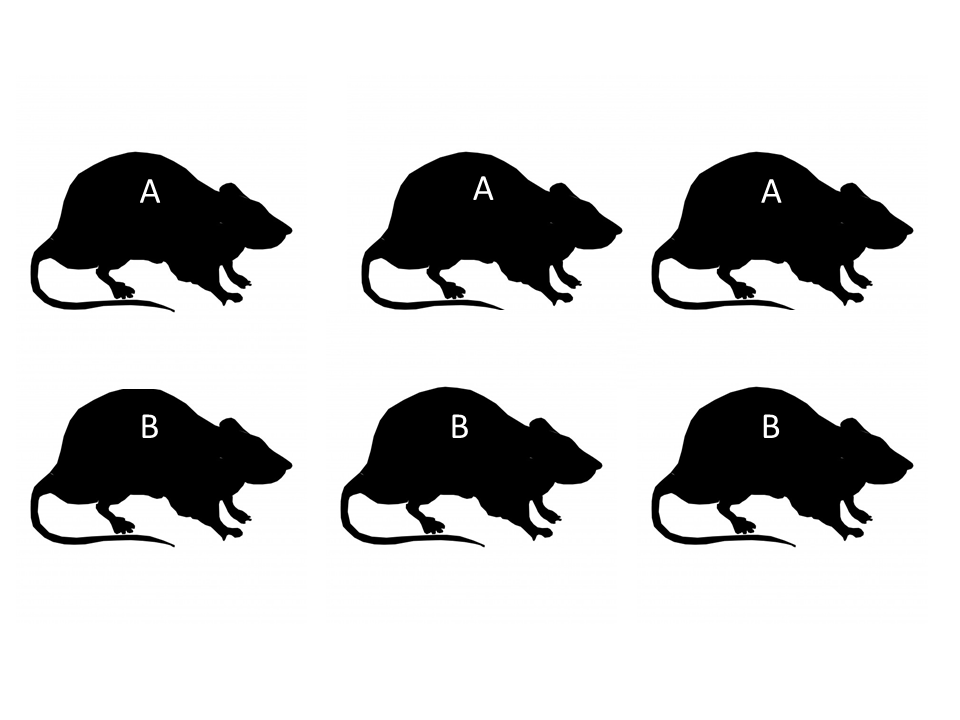
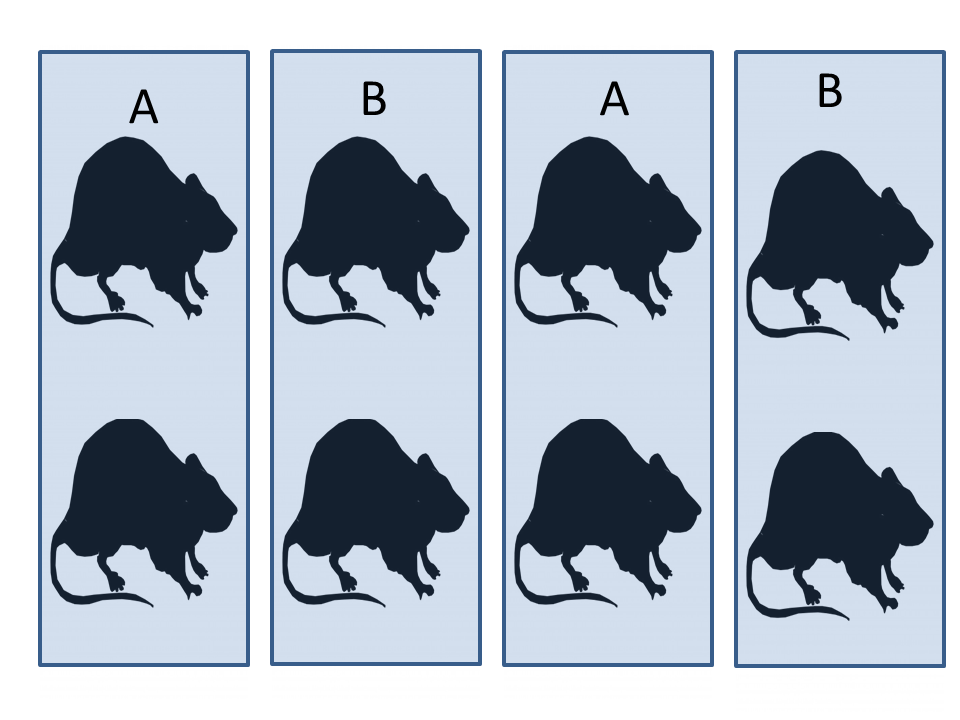
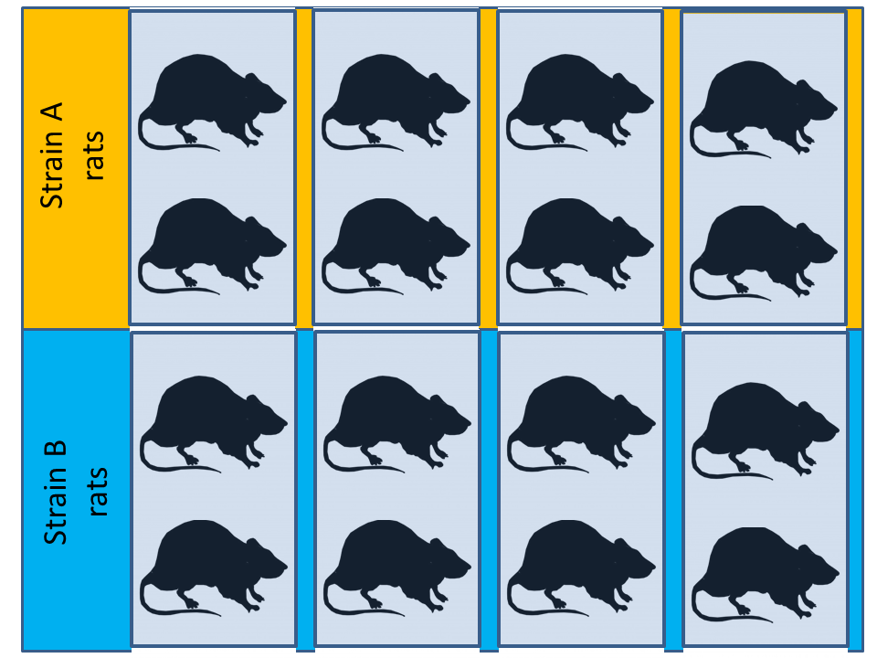

Obtaining good data, and anticipating what will go wrong before it does
Margin legend
DEF — definition KEY — key idea to remember ↪ — bridge to another lecture ⚠ — common pitfall
Where this chapter fits
This chapter comes straight after Why statistics?, and before any machine-learning method is introduced. It has been established that a statistical model is a crude approximation of a complicated process. Everything here is directed at one practical goal: arriving at data whose structure is understood, so that the subsequent analysis is sound rather than hopeful. A machine-learning method is at least as dependent on this as a classical test, and it is far less likely to warn you when the data were badly collected.
The lecture is framed by a warning that should be kept in mind throughout:
“To consult the statistician after an experiment is finished is often merely to ask him to conduct a post mortem examination. He can perhaps say what the experiment died of.”
— Sir Ronald Aylmer Fisher
Fisher’s point is that most of the leverage over a study is spent before a single measurement is taken. Once the data exist, their quality is fixed and constrains the model; the analysis can only reveal it, not repair it. This chapter therefore concerns the decisions made early, and a vocabulary — type I and type II error, power, the experimental unit — that allows those decisions to be reasoned about precisely.
Some of what follows may appear almost too simple. That is intentional. These “obvious” ideas are exactly the ones whose quiet violation produces the subtle failures that the remainder of the course is devoted to detecting and correcting.
Four principles underlie the whole lecture:
A statistical method is motivated by the hypothesis, not the reverse (but also see machine learning chapters).
A good method or model yields an unambiguous decision about the hypothesis.
Any statement about a hypothesis is a statement about random variables — a statement in terms of probability, never certainty.
Errors propagate forward. A poor research question cannot be repaired by good statistics, and poor data cannot be repaired by a clever model.
From data to facts
The purpose of an experiment is to turn measurements into a defensible claim about the world — to convert data into facts. That conversion succeeds only if a chain of earlier decisions was made well. The chain is set out explicitly, because each link is a place at which the whole argument can quietly fail:
Input. Everything begins with a research question. If it is vague, nothing downstream can sharpen it.
Population. The objects the question concerns must be identified — humans of a certain sex, age and location; a plant species under certain conditions. The population is a definition, and the researcher is responsible for it.
Data acquisition. The sample must represent the population’s properties faithfully. This is where representativeness is won or lost.
Sample size. The sample must be large enough to detect the effect of interest. Later in this chapter “large enough” becomes a computable quantity.
Confounders. Effects that were not intended for study but which nonetheless move the response must be compensated for.
Reproducibility. The acquisition process itself must be repeatable — by the same researcher later, and ideally by someone else entirely.
Quality, twice over. The quality of the data depends critically on the acquisition process; that quality in turn bounds the complexity and trustworthiness of every subsequent analysis.
The last point is the through-line of the lecture. Data quality is not a property assessed at the end; it is designed in at the start, or it is absent.
A model is where experimental design begins
The idea that connects this lecture to the first one is the following: before any pipette or field is touched, the hypothesis of interest is translated into a model to be fitted. For a study of blood pressure, for example:
\[\text{Bloodpressure} \sim \text{Gender} + \text{Concentration} + \text{Time of day}\]
This single line is already a design document. Read carefully, it conveys a surprising amount:
It states what is to be measured. Every term is a column that must be recorded.
It states the data types, and therefore the measurement method for each. Gender is nominal, concentration numerical, time of day ordinal or numerical, and the response numerical. Knowing the type is knowing how the variable will be measured.
It states where variance will enter. Every measurement method has an accuracy, and every accuracy is a source of variance. That variance may be of no scientific interest, but if the factor driving it is recorded, it can later be compensated for. This is the sense in which statistics is about explaining variance — all of the variance, including the parts of no direct interest.
The practical consequence is immediate: knowing the model, the data types and the design, the header row of the spreadsheet can be written before a single value is collected.
Bloodpressure
Gender
Concentration
Time of day
Note
Numerical
Nominal
Numerical
Ordinal or numerical
Text
That header row is not a formality. It is the model made concrete, and it is the first tidy-data decision of the study. Filled in row by row, one experimental unit at a time, the planned analysis is already half constructed.
Where does the variation come from?
If statistics is about explaining variance, then good design begins by asking, from the model’s point of view, where the variance in the response actually originates. It is useful to partition the total variation of the response into named sources:
Each term is read as a physical source rather than an algebraic symbol:
SSH — the hypothesis. Variation due to the conditions the hypothesis actually concerns. This is the signal to be detected.
SSE — the experimental unit. Natural, irreducible variation between units: one rat is simply not another rat. This is legitimate biological noise.
SSR — repeated or longitudinal structure. Variation arising from measuring the same unit more than once. This is the term that resampling has to respect on Day 7, when whole patients or plates, rather than single rows, become the unit that is left out.
SSM — measurement. Variation and bias introduced by the act of measuring: instrument drift, calibration error, operator differences.
SSU — the unknown. Variation from factors never identified — confounders, lurking covariates, the effect nobody considered.
The partition matters because the last three terms are dangerous in a way the first two are not. SSE is clean noise the model expects. But SSM and SSU can violate the assumptions on which the analysis rests: they can distort the residual distribution, destroy homoscedasticity, manufacture outliers or, worst of all, align with the treatment by accident and masquerade as signal. Much of experimental design is a set of tactics for keeping SSM and SSU out of the part of the variance that will later be attributed to the hypothesis.
What must be considered before starting
Concretely, two families of variance and bias deserve explicit thought before the experiment begins.
Variance and bias inherent to the system. Chiefly: what effect size is expected? A number is required, and it may come from the literature, from previous experiments or — clearly labelled as such — from an educated guess. Without it the study cannot be sized.
Variance and bias introduced by the experiment itself. What noise does conducting the experiment add? Considerations include the distribution of the experimental random noise; systematic error from sensor drift or confounders such as weather; the variance within an experimentally defined block (which will become a random effect); and differences between laboratories or analysts performing the measurements. Separately, the sources of bias must be considered. The obvious sources are the researcher and the research question themselves — hoping for a particular result subtly nudges the countless small choices a study requires, from which animals to include to when to stop collecting data.
The four levers: control, randomisation, replication, blocking
The aim of experimental design is to reduce, or explicitly account for, the impact of extraneous variables. Done well, it increases the power and precision of the eventual analysis at no cost — no extra data, only better-structured data. There are four classical levers, and the remainder of this chapter takes them in turn: control, randomisation, replication and blocking.
Control
A control is a comparison built into the design so that a result can be interpreted. Different problems call for different kinds:
Negative control (the \(H_0\) comparison). The treatment stripped of its active ingredient — a placebo injection of the insulin solution without the insulin. Comparing a treatment against a negative control is the most direct possible test of the null hypothesis.
Positive control (the \(H_A\) check). A condition that is confidently expected to produce an effect, used to confirm that the setup can detect one at all — a deliberately high concentration that must register if the assay functions.
Initial-conditions control. A baseline reading used to compensate for drift — recording a sensor’s signal before the manipulation so that the slow wander of, for example, a pH electrode or its amplifier can be subtracted.
Each control targets a specific term in the variance partition. The negative control isolates SSH; the initial-conditions control attacks SSM.
Randomisation
Randomisation is the tool for the most insidious term, SSU — the confounders, known and unknown. Its purpose is to ensure that whatever was not controlled does not systematically align with the treatment. Done correctly, it “averages out” the confounders, converting a potential bias into ordinary noise. Three distinct problems it defends against deserve names:
Systematic design artefacts. A non-random offset built into the physical layout — a moisture gradient across a field, a temperature gradient across a 96-well plate, an edge effect.
Unconscious bias. Non-random structure that enters without deliberate design, through the many small choices an experimenter makes.
Undesirable subjectivity. The specific failure of humans asked to be random. Humans are extraordinarily poor at generating random sequences by hand, and the patterns they produce are predictable.
A worked picture: the shaded field
Consider a field of 16 plots (or a plate of 16 wells) laid out in an orderly design, with treatments 1–4 assigned in neat columns. Suppose one edge of the field lies in shade for part of the day. Those plots receive fewer sun-hours and grow less — and because the layout was systematic, the shade falls disproportionately on treatments 1 and 3. The shade, an SSU effect, has become confounded with treatment. The analysis will report a “treatment effect” that is partly sunlight.
Figure 2.1: A systematic layout: treatments assigned in neat columns. The grey area is shade, which falls disproportionately on treatments 1 and 3.
Randomising the assignment of treatments to plots breaks that alignment. After randomisation the shade is distributed across all four treatments; no single treatment carries its full weight. One treatment may still be somewhat over-represented in the shade by chance, but — and this is the essential point — that imbalance shrinks as replicates are added. Randomisation together with replication is what turns a confounder into harmless noise.
Figure 2.2: The same field after randomising treatments to plots. The shade is now shared across all four treatments rather than confounded with two of them.
Unconscious bias
Unconscious bias is harder to detect precisely because it appears reasonable at the time. Each of the following examples sounds acceptable until examined twice:
Testing food preference “in humans” using a taste panel of women over 55.
Studying adrenaline’s effect on skeletal muscle using only young mice.
Assigning “the first ten larvae out of the box” to treatment 1 and the next ten to treatment 2 — as if the order in which they are caught carried no information (it does: the slow, the sick and the bold are not caught at random).
Beyond the biology, other pressures bias designs in systematic directions: cost, ethics and time all push towards the convenient choice. There is no statistical remedy for these. The only defence is sustained criticism of one’s own reasoning and alertness to the forms these biases take.
A subtle case: spatial confounders
Suppose 10 trees must be selected “at random” from a forest to test a pest-control chemical. A tempting method is to close one’s eyes, place a finger on ten points of the map, and take the nearest tree to each.
This is not a random sample. Trees are not uniformly spaced. Where trees cluster densely, each individual tree captures a small catchment of “nearest” points; where trees are sparse — near a clearing or a pond — a lone tree captures a large catchment and is far more likely to be chosen. The “random” points are uniform over space, but the selection probability is therefore biased towards isolated trees, which may differ systematically (more light, less competition) from trees within the stand. The spatial structure has become a confounder.
The two panels below make the trap visible. The first shows the “random” points dropped on the map; the second overlays where trees actually grow (the shaded clusters).
Code for plot below
set.seed(234)x <-runif(50, 0, 10)y <-runif(50, 0, 10)op <-par(mfrow =c(1, 2), mar =c(3, 3, 3, 1))plot(x, y, col ="blue", pch =19, main ="Points dropped 'at random'",xlab ="", ylab ="")plot(x, y, type ="n", main ="...but trees are not uniform",xlab ="", ylab ="")polygon(c(0, 0.5, 2, 3, 4), c(10, 8.2, 8, 9.3, 10), col ="lightblue", lwd =1)polygon(c(5.4, 6.0, 6.1, 5.8), c(3, 3.3, 4, 3.8), col ="lightblue", lwd =1)points(x, y, pch =19, col ="blue")
Code for plot below
par(op)
In the right-hand panel, a point landing near an isolated tree in the sparse regions selects that lone tree, while a point landing in a dense cluster is shared among many candidates; the isolated trees are therefore systematically over-selected.
The remedy is to remove space from the selection entirely: every tree is labelled and the labels are drawn at random, by computer or from an urn. Any spatial or temporal relationship among the trees is then averaged out by construction, rather than introduced by the geometry of “nearest”.
Replication — and the experimental unit
Before replicates can be counted, it must be established what is being replicated. This is the single most misunderstood idea in the lecture, and misunderstanding it is the classic route to an incorrect analysis, so it is stated carefully.
The experimental unit is the smallest division of the experimental material such that any two units could receive different independent treatments.
Equivalently: all sample units (individual measurements) within an experimental unit necessarily receive the same treatment. If six measurements share a confinement — a plot, a cage, a subject — and that confinement is what receives the treatment, then the confinement, not the individual measurement, is the experimental unit. The number of independent replicates is the number of experimental units, and it is that number — not the number of measurements — from which the degrees of freedom for the treatment are built.
The abstraction is slippery, and four cases are worked through. In each, two questions should be posed before reading on: what is the experimental unit, and how many independent replicates are there?

Figure 2.3: Case 1: each rat is individually injected with placebo (A) or vitamin C (B).
Case 1 — individually injected rats. Six rats, each individually injected with either a placebo or vitamin C, three per group. Each animal receives its own treatment, with all the particularities of its own injection, independently of the others. The rat is the experimental unit, and there are six independent replicates — three per treatment.

Figure 2.4: Case 2: rats share a box, and each box receives one diet — water or water with vitamin C.
Case 2 — rats sharing a cage diet. The vitamin C is now delivered through the drinking water, and rats are housed two to a box, each box on one diet. The two rats in a box share the same water, the same local temperature, and everything else particular to that box, but also competition for the water and possible diseases they will share; their measurements are not independent. The box is the experimental unit. With, say, two boxes per treatment there are four independent replicates, not eight, regardless of how many rats each box contains.

Figure 2.5: Case 3: two rat strains with known different baseline adrenaline levels.
Case 3 — nested strains. The hypothesis is that aggression relates to resting blood adrenaline, tested using two rat strains known to differ in baseline adrenaline. Here the “adrenaline treatment” is not applied to rats; it is a property of the strain. The treatment is nested in strain, and the strain is the experimental unit. With only two strains there are effectively two experimental units for the contrast, however many rats each contains — a genuinely weak design for the question, and one worth recognising as such before it is run.
Figure 2.6: Case 4: each rat’s liver is chopped into six pieces for fat-content analysis.
Case 4 — pieces of one liver. Rats A–C receive a standard vitamin C diet, D–F a high one; each rat’s liver is then divided into six pieces for fat-content analysis. It is tempting to claim 36 replicates. But the six pieces of one liver are genetically and historically the same animal; if that rat had liver disease, all six pieces carry it. The pieces are nested in rat; the rat is the experimental unit, giving three replicates per diet. Analysing the 36 pieces as if independent is pseudoreplication, and it makes the result appear far more certain than it is.
The thread through all four cases is the one connecting this lecture to the next. Whenever measurements share a confinement, a subject or a lineage, they are correlated, and treating them as independent inflates the effective sample size and shrinks the standard errors illegitimately. Recognising these dependencies now is what allows them to be respected later: on Day 7, boxes, strains and rats become the units that are resampled and held out together.
Blocking
Blocking is the fourth lever, and the constructive counterpart to randomisation. Where randomisation averages out a nuisance factor, blocking accounts for it explicitly. The two are not rivals; they are the two available responses to structure that was not intended, and the choice between them turns on one question: is the nuisance known to be present? If not, randomise. If so, block.
It is instructive to see all three responses to the same problem side by side, because they are literally the same field drawn three ways. In the systematic layout of the shaded field, treatments sat in neat columns and the shade fell squarely on treatments 1 and 3: the confounder was perfectly aligned with the treatment, and the analysis had no way to distinguish sunlight from effect. Randomising the assignment broke that alignment: the shade was scattered across all four treatments, and with sufficient replicates its influence averaged towards zero. But randomisation pays for that with variance — the shade remains in the residual, inflating \(\sigma\) and costing power.
Blocking does something more refined. If the shade is known to run across the field, the field is divided into blocks chosen to be internally homogeneous with respect to it — a shaded half and a sunny half — and every treatment appears once in every block, in randomised order within each. The sun-hour difference now lives entirely between the blocks, where the analysis can estimate it and set it aside. It never touches the treatment comparison, because every treatment experienced the shade equally. This is a randomised complete block design: the same field, divided along the gradient it was fighting.
Plot generating code
cols <-c(T1 ="#7F77DD", T2 ="#D85A30", T3 ="#1D9E75", T4 ="#BA7517")plot(NA, xlim =c(0, 10), ylim =c(0, 5.2), axes =FALSE,xlab ="", ylab ="",main ="Randomised complete block: the same field, split along the shade")# shade gradient: darker (less sun) on the left, fading to the rightng <-100for (i in1:ng) {rect((i -1) *10/ ng, 0.4, i *10/ ng, 4.4,col =rgb(0.37, 0.37, 0.35, 0.40* (1- (i -1) / ng)), border =NA)}text(0.4, 4.8, "Less sun", adj =0, cex =0.9)text(9.6, 4.8, "More sun", adj =1, cex =0.9)# the two blocksrect(0.2, 0.5, 4.8, 4.3, border ="grey40", lty =2, lwd =1.5)rect(5.2, 0.5, 9.8, 4.3, border ="grey40", lty =2, lwd =1.5)text(2.5, 4.05, "Block 1 (shaded)", font =2, cex =0.95)text(7.5, 4.05, "Block 2 (sunny)", font =2, cex =0.95)# helper: draw one plot cellcell <-function(x, y, tr) {rect(x, y, x +2, y +1.4, col = cols[tr], border ="white", lwd =2)text(x +1, y +0.7, tr, col ="white", font =2, cex =1.3)}# each block holds all four treatments, order randomised within the blockcell(0.5, 2.3, "T3"); cell(2.7, 2.3, "T1")cell(0.5, 0.7, "T4"); cell(2.7, 0.7, "T2")cell(5.5, 2.3, "T2"); cell(7.7, 2.3, "T4")cell(5.5, 0.7, "T1"); cell(7.7, 0.7, "T3")
The figure shows both blocks containing all four treatments, with the shade gradient running between rather than within blocks. The payoff is real and quantifiable: the between-block variation that randomisation left in the residual is now removed from it, \(\sigma\) shrinks, and — by the power heuristic introduced below — power rises at no cost in sample size. The same logic applies to any nuisance that can be named in advance: the day of the week, the technician, the shelf in the incubator, the litter a mouse came from. What can be identified is blocked; what cannot is randomised against. A further connection runs beneath this: a block is a source of shared structure among its units, just like the box and the rat before it. In bioinformatics the most familiar block is the sequencing or hybridisation batch, and a batch that is confounded with the biological groups cannot be repaired afterwards.
Integration: the four levers as one strategy
The four levers address the variance partition from different directions. Control fixes the comparison so that SSH can be isolated and SSM corrected; randomisation converts unknown SSU from bias into noise; replication at the level of the experimental unit determines how many independent observations of that noise exist; and blocking removes known nuisance variation from the residual altogether. All four are decided before any data are collected, and all four determine the denominator — the residual variance and its degrees of freedom — against which the treatment effect will eventually be judged. The next section makes that judgement quantitative.
Type I and type II error, and power
The vocabulary is now available to make “large enough” precise. Every hypothesis test can be wrong in two distinct ways, and it is essential to keep them separate.
A type I error is rejecting a true null — declaring an effect that is not present. Its probability is \(\alpha\), the significance level chosen by the analyst:
The quantity \(\alpha\) is the accepted risk of a false alarm; power is the probability of detecting a real effect. Good design fixes the first and maximises the second.
What drives power
The exact formula is not needed to build correct intuition. A heuristic captures the direction of every lever:
The expression may be read as a set of dials. Three quantities in the numerator raise power: a larger true effect size, a more permissive \(\alpha\), and a larger sample size (through \(\sqrt{n}\) — returns diminish, since quadrupling \(n\) only doubles this term). One quantity in the denominator lowers power: the residual standard deviation \(\sigma\), the noise. This is why everything earlier in the chapter mattered — control, blocking and clean measurement all attack \(\sigma\), and every reduction in \(\sigma\) purchases power without a single additional sample.
Power as overlapping curves
The most useful mental image is two sampling distributions of the mean — one under \(H_0\), one under \(H_A\) — placed side by side on the same axis. The critical values (set by \(\alpha\)) mark the cut-offs beyond which \(H_0\) is rejected. The type I error is the tail of the null curve that extends past the critical value; the type II error, \(\beta\), is the portion of the alternative curve that falls short of it, in the non-rejection region. Power is the remainder of the alternative curve — the part that clears the cut-off.
The effect of each dial on the picture follows directly. Increasing the effect size slides the two curves apart; less of the alternative curve overlaps the non-rejection region, so \(\beta\) shrinks and power grows. Decreasing \(\sigma\) narrows both curves; again the overlap falls. Increasing \(n\) tightens the sampling distributions of the mean (their spread is \(\sigma/\sqrt{n}\)), pulling the curves apart in standardised terms. Every route to more power is, in this picture, a route to less overlap between the null and alternative distributions.
Code plot below
Length_M <-seq(8, 26, 0.01)Density <-dnorm(Length_M, 18, 2) # distribution under H0 (mean 18)Density2 <-dnorm(Length_M, 15, 2) # distribution under HA (mean 15)# critical value from the H0 curveCritm <-18-2*2.048plot(Density2 ~ Length_M, type ="l", col ="red", lwd =3,ylab ="Density", xlab ="Sample mean",main ="Two distributions of the mean: power as non-overlap")# beta: the part of the HA curve in the non-rejection region (right of critical value)cord.x <-c(Critm, seq(Critm, 25, 0.01), 25)cord.y <-c(0, dnorm(seq(Critm, 25, 0.01), 15, 2), 0)polygon(cord.x, cord.y, col ="red")# power: the part of the HA curve past the critical value (left tail here)cord.x <-c(8, seq(8, Critm, 0.01), Critm)cord.y <-c(0, dnorm(seq(8, Critm, 0.01), 15, 2), 0)polygon(cord.x, cord.y, col ="darkgreen")arrows(Critm, 0.06, Critm, 0.02, lwd =3)text(Critm, 0.07, "critical value")text(16, 0.05, expression(beta), cex =3)lines(Density ~ Length_M, col ="blue", lwd =3) # H0 for referenceabline(0, 0); segments(15, 0, 15, dnorm(15, 15, 2), lty =2)
The blue curve is the sampling distribution of the mean under \(H_0\) and the red curve that under \(H_A\). The red shaded area to the right of the critical value is \(\beta\): the alternative is true, yet the sample mean falls in the non-rejection region. The green area to the left is the power. Everything else in this section is that picture, moved by one dial at a time.
Computing power in R
R reduces all of this to a one-line calculation for the two-sample \(t\)-test, and the same function answers two different questions depending on which argument is left unspecified.
Post-hoc: the study has been run — what power did it have? With \(n\) and the effect size fixed, the power is requested. This is a check after the fact, and its legitimate use is to inform the next study, not to excuse a null result.
#>
#> Two-sample t test power calculation
#>
#> n = 15
#> delta = 1
#> sd = 2
#> sig.level = 0.05
#> power = 0.2619313
#> alternative = two.sided
#>
#> NOTE: n is number in *each* group
With 15 observations per group, a true difference of 1 and a standard deviation of 2, the power is approximately 0.26: a real effect of this size would be detected in roughly one study in four. A null result from such a study is uninformative.
A priori: the study is being planned — how many replicates are needed? The desired power (0.8 is the usual minimum), the effect size and \(\sigma\) are fixed, and \(n\) is solved for. This is the calculation that should precede the experiment, and it is the whole point of Fisher’s warning.
#>
#> Two-sample t test power calculation
#>
#> n = 63.76576
#> delta = 1
#> sd = 2
#> sig.level = 0.05
#> power = 0.8
#> alternative = two.sided
#>
#> NOTE: n is number in *each* group
The required sample size is approximately 64 per group — more than four times the 15 used in the post-hoc example. The difference between the two calculations is the cost of the noise: with \(\sigma\) twice the effect size, many observations are needed to separate signal from residual variation.
The procedure for using power well is therefore a fixed sequence of decisions:
Fix the type I risk to be accepted — set \(\alpha\) (e.g. 0.05).
Decide the minimum power required — e.g. 0.8.
Decide the smallest biologically significant effect size — the smallest effect that would actually matter, not the smallest one detectable.
Obtain a defensible estimate of \(\sigma\) — from the literature, a similar experiment, or a pilot study.
With those four numbers, an a priori analysis returns the required \(n\). After the study, a post-hoc analysis reports the power that was actually attained.
Where the required sample size comes from
The number 64 is not magic, and a short derivation shows where it comes from. Take two groups of \(n\) observations with a true difference \(\delta\) and a known standard deviation \(\sigma\). The difference of the two sample means is normally distributed,
so the test statistic \(z = (\bar x_1 - \bar x_2)\big/\big(\sigma\sqrt{2/n}\big)\) is standard normal under \(H_0\) and is shifted by \(\delta\big/\big(\sigma\sqrt{2/n}\big)\) under \(H_A\). The null hypothesis is rejected when \(|z| > z_{1-\alpha/2}\). Ignoring the negligible chance of rejecting in the wrong direction,
The formula gives 62.8, and power.t.test gives one more, because it uses the \(t\) distribution: \(\sigma\) has to be estimated, which costs a little power. The formula also makes the heuristic of the previous section exact. Power depends on the data only through \(\delta\sqrt{n}/\sigma\). Halving the effect size, or doubling the noise, therefore quadruples the number of units required.
Power without a formula: simulation
power.t.test has a formula behind it, but there is a more transparent way to determine power that generalises to any design, however complex — simulate the whole experiment many times and count how often it succeeds. This is worth doing at least once explicitly, because it demystifies power completely and because the practicals rely on exactly this skill.
A single simulated experiment comes first. Fifteen “males” are drawn from a normal distribution with mean length 18 and SD 2, fifteen “females” with mean 17 and SD 2, and one \(t\)-test is run.
set.seed(1)Males <-rnorm(15, mean =18, sd =2)Females <-rnorm(15, mean =17, sd =2)t.test(Males, Females)$p.value
#> [1] 0.1295293
That single p-value is one draw from a random process; it is not, on its own, informative about power. Power is a long-run frequency, so the whole experiment is repeated 10,000 times and the fraction of runs in which the effect was correctly detected (\(p < 0.05\)) is recorded. That fraction is the power.
pval <-numeric(10000)for (i in1:10000) { A <-rnorm(20, 18, 2) # true difference is 1, SD is 2 B <-rnorm(20, 17, 2) pval[i] <-t.test(A, B)$p.value}sum(pval <0.05) /10000# estimated power at n = 20
#> [1] 0.3409
The simulated power at \(n = 20\) per group is approximately 0.34, consistent with the analytic value from power.t.test for the same parameters. The logic is entirely explicit: the effect is known to be real because it was built in, so every failure to reject is a genuine type II error, and their frequency is \(\beta\). Raising \(n\) from 20 to 40 and re-running shows the power climb — the same lesson as the heuristic formula, obtained by direct bookkeeping rather than by trusting an equation.
The power curve
Sweeping \(n\) across a range and plotting the resulting power traces a power curve, the single most useful object for planning. Reading off where the curve crosses 0.8 gives the required sample size. The analytic version is a smooth line; the simulated version is the same curve, scattered by Monte Carlo noise. Their agreement is the point: the formula and the simulation compute the same quantity in two different ways.
NN <-3:200Power <-power.t.test(n = NN, delta =1, sd =2, sig.level =0.05,type ="two.sample", alternative ="two.sided")$powerplot(Power ~ NN, type ="l", lwd =3, ylim =c(0, 1),main ="Power curve for the two-sample t-test",xlab ="n per group", ylab ="Power")segments(-5, 0.8, 64, 0.8, lty =2)arrows(64, 0.8, 64, 0.05, lty =2)text(64, 0.02, "n = 64")
The dashed guides mark the crossing: approximately 64 per group to reach a power of 0.8 for this effect size and noise level, in agreement with the a priori calculation above. Changing the effect size or \(\sigma\) shifts the entire curve — which is, once again, the message of the whole chapter. Power is not a property of the test alone; it is a property of the design.
Integration: power as the summary of design
The three computations of this section — the analytic post-hoc and a priori calls, the simulation, and the power curve — are three views of one quantity. Each shows that power is determined jointly by the effect size, the residual standard deviation, the significance level and the sample size, and that the sample size in question is the number of experimental units. The design decisions of the first half of the chapter enter through \(\sigma\) and \(n\): blocking and control reduce \(\sigma\), correct identification of the experimental unit determines the true \(n\), and randomisation ensures that what remains in \(\sigma\) is noise rather than bias. A power calculation performed before the experiment is therefore the point at which every earlier design decision is tested against the effect the study aims to detect.
Key takeaways
The leverage over a study is spent before data collection. Design determines quality; analysis can only reveal it.
Write the model first. It states what is to be measured, in what type, and where variance will enter — and it becomes the spreadsheet header.
Partition the variance into named sources. SSH is signal; SSM and SSU are the dangerous terms that can violate assumptions or masquerade as signal.
Use the four levers deliberately: control to make comparisons interpretable, randomise what cannot be controlled, replicate at the level of the experimental unit, and block what can be identified.
Identify the experimental unit correctly. Counting sample units instead of experimental units is pseudoreplication, and it manufactures false confidence.
Keep type I and type II error distinct. Fix \(\alpha\); maximise power. Every reduction in \(\sigma\) purchases power at no cost.
Compute the required sample size a priori, either with power.t.test or by simulating the experiment and counting successes.
Looking ahead
The dependencies you learned to recognise in this lecture, rats in boxes, pieces of a liver, treatments nested in strains, are the structures that decide on Day 7 how data may be resampled. Design and resampling are two halves of one skill: identifying correlation, then respecting it.
The simulation-based power analysis is the more immediate bridge. When a practical asks you to simulate and analyse data, the same loop as the power simulation above is being run — setting a true effect, generating data around it, and observing what the analysis recovers. Two questions organise the whole lecture and should precede every real measurement: has the true experimental unit been identified, and are there enough of them to detect the effect of interest? Answering these in advance is what makes a post mortem unnecessary.